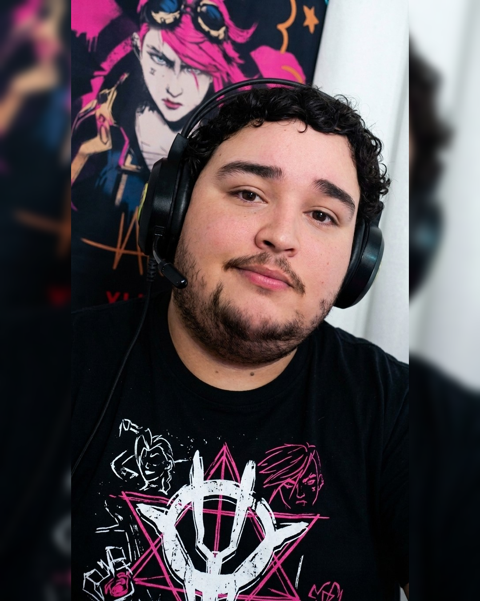

Muitas pessoas perguntam como podem apoiar o canal além dos subs, follows e da presença nas lives.
Por isso reuni aqui algumas formas de apoio, jogos que gostaria de jogar em live e algumas ideias para quem deseja contribuir com o crescimento do canal.
Mas lembre-se: sua presença na live já é o maior presente de todos. 💜
Seja assistindo às lives, compartilhando conteúdos, enviando presentes ou apenas participando do chat, toda forma de apoio faz diferença.